| 属性100％ | 属性90％ | 属性70％ | 属性60％未満 | 属性付かず | 合計 |
| 63 | 24 | 50 | 5 | 558 | 700 |
| 炎 | 冷気 | 毒 | エネルギー | カオス | 合計 |
| 24 | 25 | 31 | 35 | 27 | 142 |
| 命中+4% | 命中+5% | 命中+4% 他1プロパ |
命中+5% 他1プロパ |
合計 |
| 86 | 120 | 50 | 44 | 300 |
| 命中+4% | 命中+5% | 命中+4% 他1プロパ |
命中+5% 他1プロパ |
合計 |
| 83 | 131 | 43 | 43 | 300 |
Shadow runicでの作成例
1ワード指定| 改良オプションなし 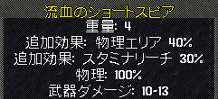 |
改良オプションなし 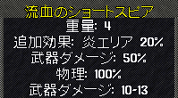 |
| パワフル製造 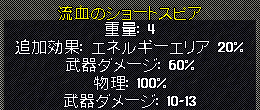 |
パワフル製造 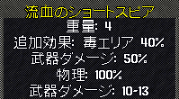 |
| 補強不可 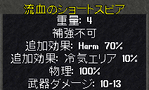 |
補強不可 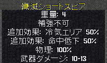 |
| 修理不可 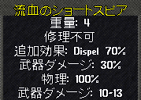 |
修理不可 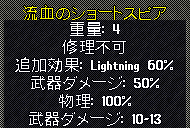 |
Shadow, Oak, Spined以下のランク＋2ワード指定では、上限値は増強されない
| 改良オプションなし |
パワフル製造 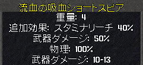 |
| 補強不可 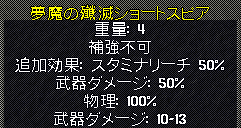 |
全オプションあり 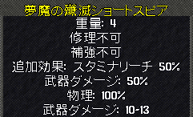 |